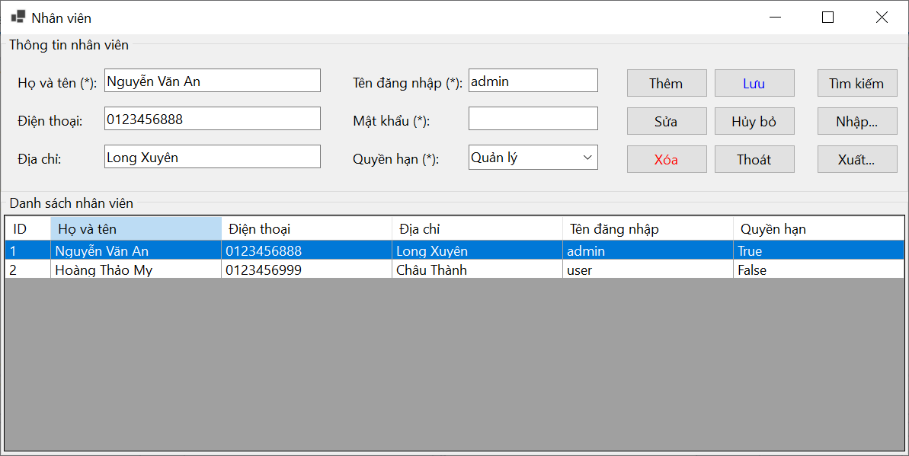

Hướng dẫn sử dụng màn hình Nhân viên.
Bước 1: Quản lý nhân sự: Danh sách nhân viên giúp tổ chức theo dõi và quản lý thông tin về nhân viên của mình, bao gồm cả số lượng, vị trí, phòng ban và thông tin liên lạc.
Bước 2: Liên lạc và giao tiếp: Thông tin trong danh sách nhân viên có thể được sử dụng để liên lạc với các nhân viên khác, như gửi email, gọi điện thoại hoặc gửi tin nhắn.
Bước 3: Quản lý quyền hạn: Danh sách nhân viên cũng có thể được sử dụng để quản lý quyền hạn và truy cập vào các tài nguyên hoặc thông tin khác trong tổ chức, như quyền truy cập vào hệ thống máy tính, tài liệu quan trọng hoặc dịch vụ nội bộ.
Bước 4: Tài liệu pháp lý: Trong một số trường hợp, các tổ chức có thể yêu cầu phải duy trì một danh sách nhân viên để tuân thủ các quy định pháp lý hoặc để đáp ứng yêu cầu báo cáo.
Bước 5:Lập kế hoạch và phân công công việc: Danh sách nhân viên có thể được sử dụng để lập kế hoạch và phân công công việc cho các dự án hoặc nhiệm vụ cụ thể trong tổ chức.
Bước 1: Click "Thêm" (Add): This will enable the input fields for adding a new employee.
Bước 2: Enter the employee details: Fill in the fields such as "Họ và Tên" (Full Name), "Điện thoại" (Phone Number), "Địa chỉ" (Address), "Tên đăng nhập" (Username), "Mật khẩu" (Password), and "Quyền hạn" (Role).
Bước 3: Click "Lưu" (Save): This will save the new employee's information to the database and refresh the employee list.
Bước 1: Chọn nhân viên: Nhấn vào bản ghi nhân viên bạn muốn sửa từ danh sách.
Bước 2: Nhấn "Sửa": Điều này sẽ bật các trường nhập liệu với thông tin của nhân viên được chọn.
Bước 3: Chỉnh sửa thông tin: Sửa các trường cần thiết.
Bước 4:Nhấn "Lưu": Điều này sẽ cập nhật thông tin nhân viên trong cơ sở dữ liệu.
Bước 1: VChọn nhân viên: Nhấn vào bản ghi nhân viên bạn muốn xóa từ danh sách.
Bước 2: Nhấn "Xóa": Điều này sẽ hiển thị một hộp thoại xác nhận.
Bước 3:Xác nhận xóa: Xác nhận hành động để xóa nhân viên khỏi cơ sở dữ liệu.
Bước 1: Nhấn "Nhập": Điều này sẽ mở một hộp thoại file.
Bước 2: Chọn file nhập: Chọn file (thường là CSV hoặc Excel) chứa dữ liệu nhân viên.
Bước 3: Tải file lên: Hệ thống sẽ đọc và nhập dữ liệu nhân viên từ file vào cơ sở dữ liệu.
Bước 1: Nhấn "Xuất": Điều này sẽ xuất danh sách nhân viên hiện tại ra một file.
Bước 2:Chọn định dạng xuất: Thường là CSV hoặc Excel.
Bước 3:Tải file về: Lưu file xuất ra vào hệ thống của bạn để sao lưu hoặc báo cáo.
Bước 1: Nhấn "Hủy bỏ": Điều này sẽ xóa bỏ bất kỳ thay đổi nào được thực hiện trong các trường nhập liệu và đặt lại chúng về trạng thái ban đầu mà không lưu.
Bước 1: Nhấn "Thoát": Điều này sẽ đóng cửa sổ quản lý nhân viên